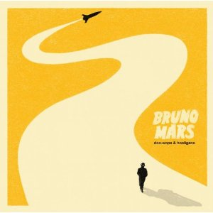

Bruno Mars
115M seguidores
Músicas Populares
- 24K Magic
- That's What I Like
- Just the Way You Are
- Grenade
- Uptown Funk
Álbuns
24K Magic

Doo-Wops & Hooligans/p>

Unorthodox Jukebox
Playlists
- Alto Astral
- This is Bruno Mars
- Pop Up
Sobre Bruno Mars
Peter Eugene Hernandez (Honolulu, 8 de outubro de 1985), mais conhecido pelo nome artístico Bruno Mars, é um cantor, compositor, músico e dançarino americano. Vindo de uma família com uma grande tradição musical, Mars começou a cantar e a se apresentar como um artista amador durante a infância. Depois de se formar no Ensino Médio, decidiu mudar-se para Los Angeles, na Califórnia, com o objetivo de investir cada vez mais em sua carreira musical. Em Los Angeles, ele formou a equipe de produtores The Smeezingtons, ao lado de Philip Lawrence e Ari Levine, trabalhando para a Motown Records.